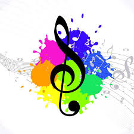
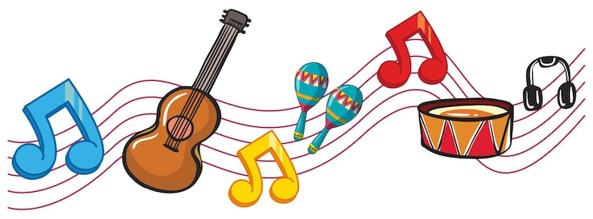
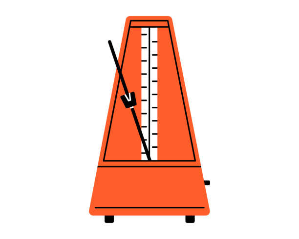

O que é música?
Por: Sofia Debora
A música é um conjunto de sons organizados, ou seja quando organizamos os sons criamos música.

Pilares da música
harmônia, melodia e ritmo
Harmônia:
A harmônia acontece quando tocamos duas ou mais notas ao mesmo tempo formando um som agradável, ela serve como base para a melodia e para o ritmo.
Melodia:
é uma sequência de notas tocadas uma após a outra, ela é responsavel por marcar o ritmo e ajuda a transmitir a emoção da música.
Ritmo:
É a organização de sons e silêncio caracterizada pela alternância entre tempos fortes e fracos.
